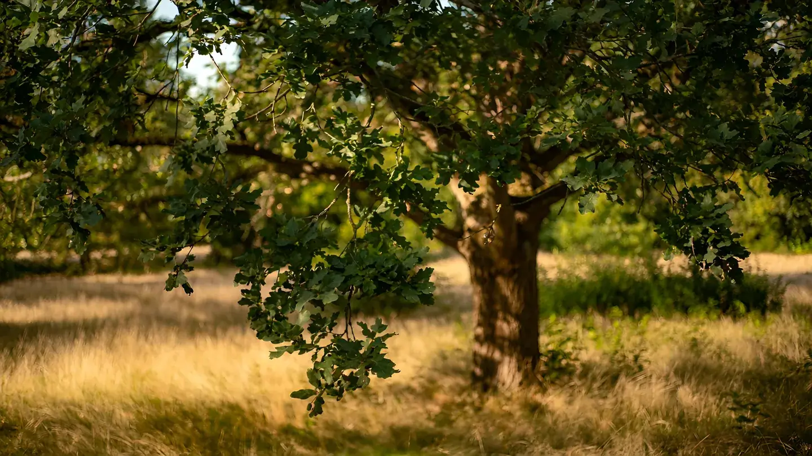

Ahşap mobilya atölyesi · örnek
Ağaçtan
masaya.
Masif meşe masa, ölçünüze göre. Aşağı kaydırın: bir masanın hikâyesi ağaçta başlar.
Kaydırın ↓Filmi geç ↓
Film biter, site başlar
Bu bir demo. Gerçek sitede bu bölümden sonra ürünler, fiyatlar, sipariş formu ve Google'da bulunmanızı sağlayan yerel SEO içerikleri gelir. Film yalnızca açılıştır; sayfanın geri kalanı hızlı, normal HTML'dir.
Kendi fotoğraflarınızla
Film, işletmenizin gerçek fotoğrafları arasındaki geçişlerden üretilir: hammadde, atölye, bitmiş ürün.
Telefonda hafif
Mobilde daha küçük ve daha az kare iner. İlk kare anında görünür, film kaydırınca yüklenir.
Erişilebilir
Hareketi azaltma tercihi olan ziyaretçi durağan bir açılış görür. "Filmi geç" düğmesi her an hazır.
İşletmenize böyle bir açılış
Film Açılış 9.900 TL'den başlar (KDV hariç). Paketlerin tamamı ve fiyatlar Sinematik Vitrin sayfasında.
Demo görselleri: Pixabay İçerik Lisansı (meşe ağacı: mariya_m #7468708, meşe tahta: AS_Photography #3217987, rende: Dormeur74 #4015109, masa: kjhmicro #332207). Aradaki geçişler Dijitabela tarafından yapay zekâ ile üretildi. "Meşe & Usta" hayalî bir işletmedir.